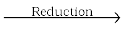
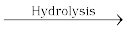
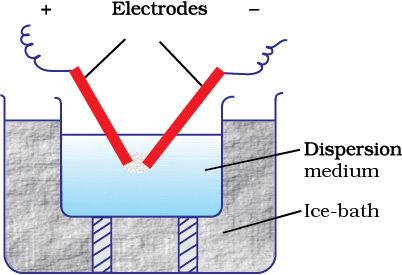
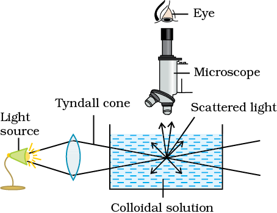
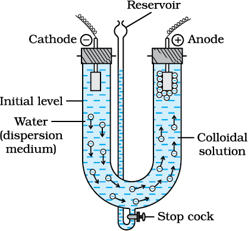

We have learnt in Unit 2 that solutions are homogeneous systems. We also know that sand in water when stirred gives a suspension, which slowly settles down with time. Between the two extremes of suspensions and solutions we come across a large group of systems called colloidal dispersions or simply colloids.
A colloid is a heterogeneous system in which one substance is dispersed (dispersed phase) as very fine particles in another substance called dispersion medium.
The essential difference between a solution and a colloid is that of particle size. While in a solution, the constituent particles are ions or small molecules, in a colloid, the dispersed phase may consist of particles of a single macromolecule (such as protein or synthetic polymer) or an aggregate of many atoms, ions or molecules. Colloidal particles are larger than simple molecules but small enough to remain suspended. Their range of diameters is between 1 and 1000 nm (10–9 to 10–6 m).
Colloidal particles have an enormous surface area per unit mass as a result of their small size. Consider a cube with 1 cm side. It has a total surface area of 6 cm2. If it were divided equally into 1012 cubes, the cubes would be the size of large colloidal particles and have a total surface area of 60,000 cm2 or 6 m2. This enormous surface area leads to some special properties of colloids to be discussed later in this Unit.
Colloids are classified on the basis of the following criteria:
(i) Physical state of dispersed phase and dispersion medium
(ii) Nature of interaction between dispersed phase and dispersion medium
(iii) Type of particles of the dispersed phase.
Depending upon whether the dispersed phase and the dispersion medium are solids, liquids or gases, eight types of colloidal systems are possible. A gas mixed with another gas forms a homogeneous mixture and hence is not a colloidal system. The examples of the various types of colloids along with their typical names are listed in Table 5.4.
Table 5.4: Types of Colloidal Systems
|
Dispersed phase |
Dispersion medium |
Type of colloid |
Examples |
|
Solid Solid Solid Liquid Liquid Liquid Gas Gas |
Solid Liquid Gas Solid Liquid Gas Solid Liquid |
Solid sol Sol Aerosol Gel Emulsion Aerosol Solid sol Foam |
Some coloured glasses and gem stones Paints, cell fluids Smoke, dust Cheese, jellies Milk, hair cream, butter Fog, mist, cloud, insecticide sprays Pumice stone, foam rubber Froth, whipped cream, soap lather |
Many familiar commercial products and natural objects are colloids. For example, whipped cream is a foam, which is a gas dispersed in a liquid. Firefighting foams, used at emergency airplane landings are also colloidal systems. Most biological fluids are aqueous sols (solids dispersed in water). Within a typical cell, proteins and nucleic acids are colloidal-sized particles dispersed in an aqueous solution of ions and small molecules.
Out of the various types of colloids given in Table 5.4, the most common are sols(solids in liquids), gels (liquids in solids) and emulsions (liquids in liquids). However, in the present Unit, we shall take up discussion of the ‘sols’ and ‘emulsions’ only. Further, it may be mentioned that if the dispersion medium is water, the sol is called aquasol or hydrosol and if the dispersion medium is alcohol, it is called alcosol and so on.
Depending upon the nature of interaction between the dispersed phase and the dispersion medium, colloidal sols are divided into two categories, namely, lyophilic (solvent attracting) and lyophobic (solvent repelling). If water is the dispersion medium, the terms used are hydrophilic and hydrophobic.
(i) Lyophilic colloids: The word ‘lyophilic’ means liquid-loving. Colloidal sols directly formed by mixing substances like gum, gelatine, starch, rubber, etc., with a suitable liquid (the dispersion medium) are called lyophilic sols. An important characteristic of these sols is that if the dispersion medium is separated from the dispersed phase (say by evaporation), the sol can be reconstituted by simply remixing with the dispersion medium. That is why these sols are also called reversible sols. Furthermore, these sols are quite stable and cannot be easily coagulated as discussed later.
(ii) Lyophobic colloids: The word ‘lyophobic’ means liquid-hating. Substances like metals, their sulphides, etc., when simply mixed with the dispersion medium do not form the colloidal sol. Their colloidal sols can be prepared only by special methods (as discussed later). Such sols are called lyophobic sols. These sols are readily precipitated (or coagulated) on the addition of small amounts of electrolytes, by heating or by shaking and hence, are not stable. Further, once precipitated, they do not give back the colloidal sol by simple addition of the dispersion medium. Hence, these sols are also called irreversible sols. Lyophobic sols need stabilising agents for their preservation.
Depending upon the type of the particles of the dispersed phase, colloids are classified as: multimolecular, macromolecular and associated colloids.
(i) Multimolecular colloids: On dissolution, a large number of atoms or smaller molecules of a substance aggregate together to form species having size in the colloidal range (1–1000 nm). The species thus formed are called multimolecular colloids. For example, a gold sol may contain particles of various sizes having many atoms. Sulphur sol consists of particles containing a thousand or more of S8 sulphur molecules.
(ii) Macromolecular colloids: Macromolecules (Unit 15) in suitable solvents form solutions in which the size of the macromolecules may be in the colloidal range. Such systems are called macromolecular colloids. These colloids are quite stable and resemble true solutions in many respects. Examples of naturally occurring macromolecules are starch, cellulose, proteins and enzymes; and those of man-made macromolecules are polythene, nylon, polystyrene, synthetic rubber, etc.
(iii) Associated colloids (Micelles): There are some substances which at low concentrations behave as normal strong electrolytes, but at higher concentrations exhibit colloidal behaviour due to the formation of aggregates. The aggregated particles thus formed are called micelles. These are also known as associated colloids. The formation of micelles takes place only above a particular temperature called Kraft temperature (Tk) and above a particular concentration called critical micelle concentration (CMC). On dilution, these colloids revert back to individual ions. Surface active agents such as soaps and synthetic detergents belong to this class. For soaps, the CMC is 10–4 to 10–3 mol L–1. These colloids have both lyophobic and lyophilic parts. Micelles may contain as many as 100 molecules or more.
Let us take the example of soap solutions. Soap is sodium or potassium salt of a higher fatty acid and may be represented as RCOO–Na+ (e.g., sodium stearate CH3(CH2)16COO–Na+, which is a major component of many bar soaps). When dissolved in water, it dissociates into RCOO– and Na+ ions. The RCOO– ions, however, consist of two parts — a long hydrocarbon chain R (also called non-polar ‘tail’) which is hydrophobic (water repelling), and a polar group COO– (also called polar-ionic ‘head’), which is hydrophilic (water loving).
The RCOO– ions are, therefore, present on the surface with their COO– groups in water and the hydrocarbon chains R staying away from it and remain at the surface. But at critical micelle concentration, the anions are pulled into the bulk of the solution and aggregate to form a spherical shape with their hydrocarbon chains pointing towards the centre of the sphere with COO– part remaining outward on the surface of the sphere. An aggregate thus formed is known as ‘ionic micelle’. These micelles may contain as many as 100 such ions.
Similarly, in case of detergents, e.g., sodium laurylsulphate, CH3(CH2)11SO4–Na+, the polar group is –SO4– along with the long hydrocarbon chain. Hence, the mechanism of micelle formation here also is same as that of soaps.
It has been mentioned earlier that a micelle consists of a hydrophobic hydrocarbon – like central core. The cleansing action of soap is due to the fact that soap molecules form micelle around the oil droplet in such a way that hydrophobic part of the stearate ions is in the oil droplet and hydrophilic part projects out of the grease droplet like the bristles (Fig. 5.7). Since the polar groups can interact with water, the oil droplet surrounded by stearate ions is now pulled in water and removed from the dirty surface. Thus soap helps in emulsification and washing away of oils and fats. The negatively charged sheath around the globules prevents them from coming together and forming aggregates.
A few important methods for the preparation of colloids are as follows:
(a) Chemical methods
Colloidal dispersions can be prepared by chemical reactions leading to formation of molecules by double decomposition, oxidation, reduction or hydrolysis. These molecules then aggregate leading to formation of sols.
As2O3 + 3H2S As2S3(sol) + 3H2O
SO2 + 2H2S 3S(sol) + 2H2O
2 AuCl3 + 3 HCHO + 3H2O  2Au(sol) + 3HCOOH + 6HCl
FeCl3 + 3H2O  Fe(OH)3 (sol) + 3HCl
(b) Electrical disintegration or Bredig’s Arc method
This process involves dispersion as well as condensation. Colloidal sols of metals such as gold, silver, platinum, etc., can be prepared by this method. In this method, electric arc is struck between electrodes of the metal immersed in the dispersion medium (Fig. 5.8). The intense heat produced vapourises the metal, which then condenses to form particles of colloidal size.

(c) Peptization
Peptization may be defined as the process of converting a precipitate into colloidal sol by shaking it with dispersion medium in the presence of a small amount of electrolyte. The electrolyte used for this purpose is called peptizing agent. This method is applied, generally, to convert a freshly prepared precipitate into a colloidal sol.
During peptization, the precipitate adsorbs one of the ions of the electrolyte on its surface. This causes the development of positive or negative charge on precipitates, which ultimately break up into smaller particles of the size of a colloid.
Colloidal solutions when prepared, generally contain excessive amount of electrolytes and some other soluble impurities. While the presence of traces of electrolyte is essential for the stability of the colloidal solution, larger quantities coagulate it. It is, therefore, necessary to reduce the concentration of these soluble impurities to a requisite minimum. The process used for reducing the amount of impurities to a requisite minimum is known as purification of colloidal solution. The purification of colloidal solution is carried out by the following mehods:
(i) Dialysis: It is a process of removing a dissolved substance from a colloidal solution by means of diffusion through a suitable membrane. Since particles (ions or smaller molecules) in a true solution can pass through animal membrane (bladder) or parchment paper or cellophane sheet but not the colloidal particles, the membrane can be used for dialysis. The apparatus used for this purpose is called dialyser. A bag of suitable membrane containing the colloidal solution is suspended in a vessel through which fresh water is continuously flowing (Fig. 5.9). The molecules and ions diffuse through membrane into the outer water and pure colloidal solution is left behind.
(ii) Electro-dialysis: Ordinarily, the process of dialysis is quite slow. It can be made faster by applying an electric field if the dissolved substance in the impure colloidal solution is only an electrolyte. The process is then named electrodialysis. The colloidal solution is placed in a bag of suitable membrane while pure water is taken outside. Electrodes are fitted in the compartment as shown in Fig. 5.10. The ions present in the colloidal solution migrate out to the oppositely charged electrodes.
(iii) Ultrafiltration: Ultrafiltration is the process of separating the colloidal particles from the solvent and soluble solutes present in the colloidal solution by specially prepared filters, which are permeable to all substances except the colloidal particles. Colloidal particles can pass through ordinary filter paper because the pores are too large. However, the pores of filter paper can be reduced in size by impregnating with collodion solution to stop the flow of colloidal particles. The usual collodion is a 4% solution of nitro-cellulose in a mixture of alcohol and ether. An ultra-filter paper may be prepared by soaking the filter paper in a collodion solution, hardening by formaldehyde and then finally drying it. Thus, by using ultra-filter paper, the colloidal particles are separated from rest of the materials. Ultrafiltration is a slow process. To speed up the process, pressure or suction is applied. The colloidal particles left on the ultra-filter paper are then stirred with fresh dispersion medium (solvent) to get a pure colloidal solution.
Various properties exhibited by the colloidal solutions are described below:
(i) Colligative properties: Colloidal particles being bigger aggregates, the number of particles in a colloidal solution is comparatively small as compared to a true solution. Hence, the values of colligative properties (osmotic pressure, lowering in vapour pressure, depression in freezing point and elevation in boiling point) are of small order as compared to values shown by true solutions at same concentrations.

(ii) Tyndall effect: If a homogeneous solution placed in dark is observed in the direction of light, it appears clear and, if it is observed from a direction at right angles to the direction of light beam, it appears perfectly dark. Colloidal solutions viewed in the same way may also appear reasonably clear or translucent by the transmitted light but they show a mild to strong opalescence, when viewed at right angles to the passage of light, i.e., the path of the beam is illuminated by a bluish light. This effect was first observed by Faraday and later studied in detail by Tyndall and is termed as Tyndall effect. The bright cone of the light is called Tyndall cone (Fig. 5.11). The Tyndall effect is due to the fact that colloidal particles scatter light in all directions in space. This scattering of light illuminates the path of beam in the colloidal dispersion.
Tyndall effect can be observed during the projection of picture in the cinema hall due to scattering of light by dust and smoke particles present there. Tyndall effect is observed only when the following two conditions are satisfied.
(i) The diameter of the dispersed particles is not much smaller than the wavelength of the light used; and
(ii) The refractive indices of the dispersed phase and the dispersion medium differ greatly in magnitude.
Tyndall effect is used to distinguish between a colloidal and true solution. Zsigmondy, in 1903, used Tyndall effect to set up an apparatus known as ultramicroscope. An intense beam of light is focussed on the colloidal solution contained in a glass vessel. The focus of the light is then observed with a microscope at right angles to the beam. Individual colloidal particles appear as bright stars against a dark background. Ultramicroscope does not render the actual colloidal particles visible but only observe the light scattered by them. Thus, ultramicroscope does not provide any information about the size and shape of colloidal particles.
(iii) Colour: The colour of colloidal solution depends on the wavelength of light scattered by the dispersed particles. The wavelength of light further depends on the size and nature of the particles. The colour of colloidal solution also changes with the manner in which the observer receives the light. For example, a mixture of milk and water appears blue when viewed by the reflected light and red when viewed by the transmitted light. Finest gold sol is red in colour; as the size of particles increases, it appears purple, then blue and finally golden.
(iv) Brownian movement: When colloidal solutions are viewed under a powerful ultramicroscope, the colloidal particles appear to be in astate of continuous zig-zag motion all over the field of view. This motion was first observed by the British botanist, Robert Brown, and is known as Brownian movement (Fig. 5.12). This motion is independent of the nature of the colloid but depends on the size of the particles and viscosity of the solution. Smaller the size and lesser the viscosity, faster is the motion.
The Brownian movement has been explained to be due to the unbalanced bombardment of the particles by the molecules of the dispersion medium. The Brownian movement has a stirring effect which does not permit the particles to settle and thus, is responsible for the stability of sols.
(v) Charge on colloidal particles: Colloidal particles always carry an electric charge. The nature of this charge is the same on all the particles in a given colloidal solution and may be either positive or negative. A list of some common sols with the nature of charge on their particles is given below:
| Positively charged sols |
Negatively charged sols |
|
Hydrated metallic oxides, e.g., Al2O3 .xH2O, CrO3 .xH2O and Fe2O3 .xH2O, etc. Basic dye stuffs, e.g., methylene blue sol. Haemoglobin (blood)Oxides, e.g., TiO2 sol |
Metals, e.g., copper, silver,gold sols. Metallic sulphides, e.g., As2S3 , Sb2S3 , CdS sols. Acid dye stuffs, e.g., eosin, congo red sols. Sols of starch, gum, gelatin, clay, charcoal, etc. |
The charge on the sol particles is due to one or more reasons, viz., due to electron capture by sol particles during electrodispersion of metals, due to preferential adsorption of ions from solution and/or due to formulation of electrical double layer.
Preferential adsorption of ions is the most accepted reason. The sol particles acquire positive or negative charge by preferential adsorption of positive or negative ions. When two or more ions are present in the dispersion medium, preferential adsorption of the ion common to the colloidal particle usually takes place. This can be explained by taking the following examples:
(a) When silver nitrate solution is added to potassium iodide solution, the precipitated silver iodide adsorbs iodide ions from the dispersion medium and negatively charged colloidal sol results. However, when KI solution is added to AgNO3 solution, positively charged sol results due to adsorption of Ag+ ions from dispersion medium.
AgI/I– AgI/Ag+
Negatively charged Positively charged
(b) If FeCl3 is added to excess of hot water, a positively charged sol of hydrated ferric oxide is formed due to adsorption of Fe3+ ions. However, when ferric chloride is added to NaOH a negatively charged sol is obtained with adsorption of OH- ions.
Fe2O3.xH2O/Fe3+ Fe2O3.xH2O/OH–
Positively charged Negatively charged
Having acquired a positive or a negative charge by selective adsorption on the surface of a colloidal particle as stated above, this layer attracts counter ions from the medium forming a second layer, as shown below.
AgI/I- K+ AgI/Ag+I-
The combination of the two layers of opposite charges around the colloidal particle is called Helmholtz electrical double layer. According to modern views, the first layer of ions is firmly held and is termed fixed layer while the second layer is mobile which is termed diffused layer. Since separation of charge is a seat of potential, the charges of opposite signs on the fixed and diffused parts of the double layer results in a difference in potential between these layers. This potential difference between the fixed layer and the diffused layer of opposite charges is called the electrokinetic potential or zeta potential.
The presence of equal and similar charges on colloidal particles is largely responsible in providing stability to the colloidal solution, because the repulsive forces between charged particles having same charge prevent them from coalescing or aggregating when they come closer to one another.
(vi) Electrophoresis: The existence of charge on colloidal particles is confirmed by electrophoresis experiment. When electric potential is applied across two platinum electrodes dipping in a colloidal solution, the colloidal particles move towards one or the other electrode. The movement of colloidal particles under an applied electric potential is called electrophoresis. Positively charged particles move towards the cathode while negatively charged particles move towards the anode. This can be demonstrated by the following experimental set-up (Fig. 5.13).

When electrophoresis, i.e., movement of particles is prevented by some suitable means, it is observed that the dispersion medium begins to move in an electric field. This phenomenon is termed electroosmosis.
(vii) Coagulation or precipitation: The stability of the lyophobic sols is due to the presence of charge on colloidal particles. If, somehow, the charge is removed, the particles will come nearer to each other to form aggregates (or coagulate) and settle down under the force of gravity.
The process of settling of colloidal particles is called coagulation or precipitation of the sol.
The coagulation of the lyophobic sols can be carried out in the following ways:
(i) By electrophoresis: The colloidal particles move towards oppositely charged electrodes, get discharged and precipitated.
(ii) By mixing two oppositely charged sols: Oppositely charged sols when mixed in almost equal proportions, neutralise their charges and get partially or completely precipitated. Mixing of hydrated ferric oxide (+ve sol) and arsenious sulphide (–ve sol) bring them in the precipitated forms. This type of coagulation is called mutual coagulation.
(iii) By boiling: When a sol is boiled, the adsorbed layer is disturbed due to increased collisions with the molecules of dispersion medium. This reduces the charge on the particles and ultimately leads to settling down in the form of a precipitate.
(iv) By persistent dialysis: On prolonged dialysis, traces of the electrolyte present in the sol are removed almost completely and the colloids become unstable and ultimately coagulate.
(v) By addition of electrolytes: When excess of an electrolyte is added, the colloidal particles are precipitated. The reason is that colloids interact with ions carrying charge opposite to that present on themselves. This causes neutralisation leading to their coagulation. The ion responsible for neutralisation of charge on the particles is called the coagulating ion. A negative ion causes the precipitation of positively charged sol and vice versa.
It has been observed that, generally, the greater the valence of the flocculating ion added, the greater is its power to cause precipitation. This is known as Hardy-Schulze rule. In the coagulation of a negative sol, the flocculating power is in the order: Al3+>Ba2+>Na+
Similarly, in the coagulation of a positive sol, the flocculating power is in the order: [Fe(CN)6]4– > PO43– > SO42– > Cl–
The minimum concentration of an electrolyte in millimoles per litre required to cause precipitation of a sol in two hours is called coagulating value. The smaller the quantity needed, the higher will be the coagulating power of an ion.
There are two factors which are responsible for the stability of lyophilic sols. These factors are the charge and solvation of the colloidal particles. When these two factors are removed, a lyophilic sol can be coagulated. This is done (i) by adding an electrolyte and (ii) by adding a suitable solvent. When solvents such as alcohol and acetone are added to hydrophilic sols, the dehydration of dispersed phase occurs. Under this condition, a small quantity of electrolyte can bring about coagulation.
Lyophilic sols are more stable than lyophobic sols. This is due to the fact that lyophilic colloids are extensively solvated, i.e., colloidal particles are covered by a sheath of the liquid in which they are dispersed.
Lyophilic colloids have a unique property of protecting lyophobic colloids. When a lyophilic sol is added to the lyophobic sol, the lyophilic particles form a layer around lyophobic particles and thus protect the latter from electrolytes. Lyophilic colloids used for this purpose are called protective colloids.